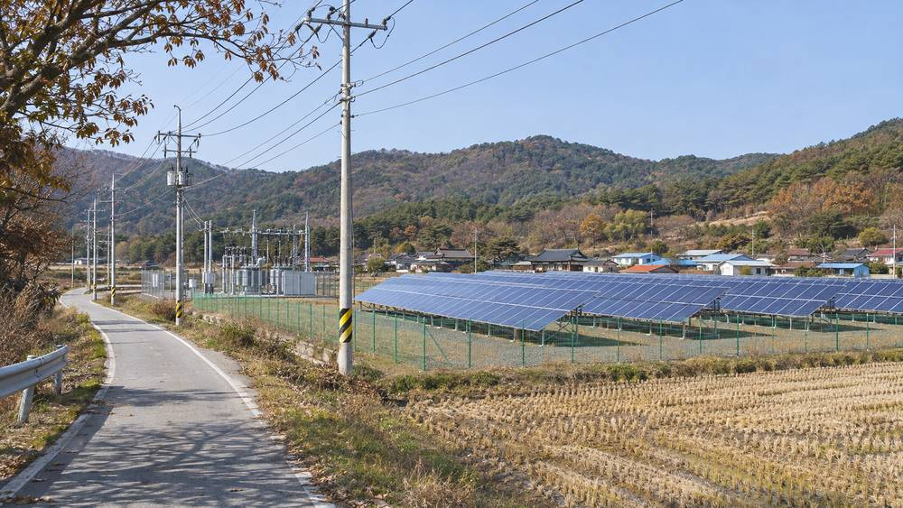
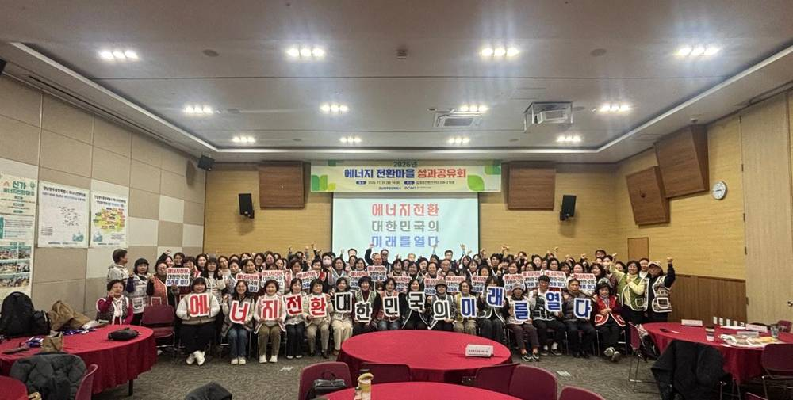

당진 스마트그린산단 620억, 55%는 에너지에
당진시와 한국산업단지공단이 11월 26일 입주기업 설명회를 열었다. 2029년까지 국비 390억 원을 들이며, 12월 초 수요기업 사전점검에 들어간다.




ESS 3차 입찰 14곳 1,194MW, 2차의 두 배
전남 6곳·전북 5곳·충남 1곳·제주 2곳이 우선협상 대상이다. 최종 물량은 12월 4일 확정되고, 설비는 2029년 2월까지 지어야 한다.

RPS 의무공급량 확정, 1월보다 15만MWh 줄어
기후에너지환경부가 11월 24일 29개 공급의무자 몫을 6,917만4,827MWh, 9,407만7,763REC로 확정했다. 한국남부발전 감소 폭이 가장 컸다.
오늘 주목할 소식
- 새만금 수상태양광 100MW, 전북개발공사가 사업자로
- 제주 재생에너지 100%, 2035년까지 5.5GW 늘린다
- 김해 초전 햇빛소득마을 997.1kW, 전국 첫 상업운전
- 한국발전공사법안 발의, 본사 보령·자본금 32조 원
- 하남 동서울변환소 협의서, 감일 주민투표로 결정
- 공장 지붕 재생에너지 의무화, 이행강제금 3,000만 원
햇빛소득마을 더보기 ›
정치 더보기 ›
미래대응기금 지방 몫, 교부세 산식 배분 두고 쟁점
경기도는 불교부단체라 빠질 수 있다며 성장기여도 반영과 8,750억 원 추산을 내놨다. 행정안전부는 일부를 일반재원으로 교부한다고 설명해 왔다.
정책 더보기 ›
RPS 의무공급량 확정, 1월보다 15만MWh 줄어
기후에너지환경부가 11월 24일 29개 공급의무자 몫을 6,917만4,827MWh, 9,407만7,763REC로 확정했다. 한국남부발전 감소 폭이 가장 컸다.
산업·경제 더보기 ›
ESS 3차 입찰 14곳 1,194MW, 2차의 두 배
전남 6곳·전북 5곳·충남 1곳·제주 2곳이 우선협상 대상이다. 최종 물량은 12월 4일 확정되고, 설비는 2029년 2월까지 지어야 한다.
금융 더보기 ›
미래대응기금 지방 몫, 교부세 산식 배분 두고 쟁점
경기도는 불교부단체라 빠질 수 있다며 성장기여도 반영과 8,750억 원 추산을 내놨다. 행정안전부는 일부를 일반재원으로 교부한다고 설명해 왔다.
사회 더보기 ›
기후변화 시나리오 첫 산출, 세기 말 1.2~3.6℃ 상승
기상청이 IPCC 7차 보고서용 전지구 시나리오 2종을 냈다. 동아시아는 고배출 때 최대 4.1℃ 오르고, 한반도 표준 시나리오는 2030년에 나온다.
지역 더보기 ›
당진 스마트그린산단 620억, 55%는 에너지에
당진시와 한국산업단지공단이 11월 26일 입주기업 설명회를 열었다. 2029년까지 국비 390억 원을 들이며, 12월 초 수요기업 사전점검에 들어간다.
오피니언 더보기 ›
이순형 동신대 교수, 전남광주 재생에너지 50GW 일감 지역 기업에 돌리자 제안
투자 250조 원 추산하며 발주 시간표·공동도급·인력 양성 주문…산업부는 호남 주요 전력망 확충을 2031년 이후로 설명
시민에너지 더보기 ›
김해 초전 햇빛소득마을 997.1kW, 전국 첫 상업운전
주민 협동조합이 남해고속도로 비탈면 6,024㎡에 지었다. 정책금융 융자 85%·자부담 15%로 짓고 전기는 20년 계약으로 판다.